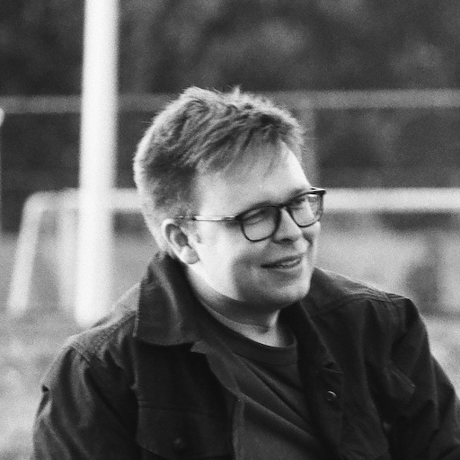

David Lougheed
 I am a bioinformatician and software developer at the Canadian Centre for Computational Genomics (C3G) in Montréal. There, I am creating web portals for health and ‑omics data, and developing a tool to better genotype short tandem DNA repeats using long-read sequencing data.
I also occasionally work at the Queen's University Biological Station, where I act as a field/network technician, helping to maintain networking infrastructure and a network of satellite-linked climate stations.
I have a B.Sc. in Computer Science and Biology (graduated 2019 with First Class Honours), and an M.Sc. in Human Genetics (granted 2023); both from McGill University. My Master's thesis was supervised by Professor Guillaume Bourque, and is titled “Using High-Fidelity Long-Read Sequencing to Better Detect and Understand Short Tandem Repeat Variation in Humans.”
Links: Academic CV, Resumé, GitHub, Google Scholar